Write Basics
When you start Write, you can immediately begin typing. Text is input behind the cursor, which appears as a vertical line like this | on the screen.
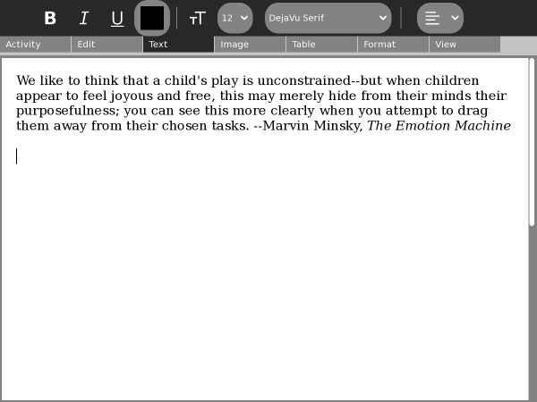
Naming your document
You can name your document by typing into the field found on the Activity tab in the upper left hand corner of the screen.
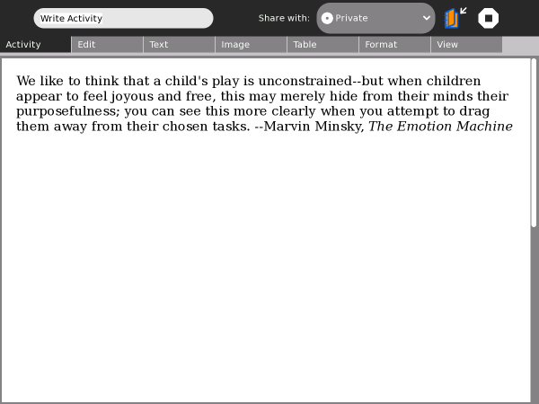
Below, the name of the document has been changed to "The Emotion Machine."
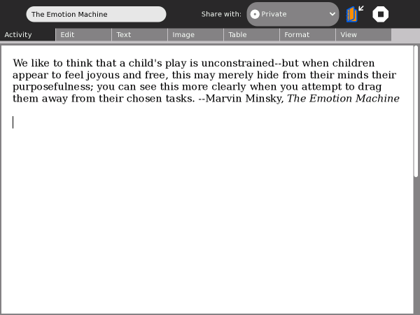
Inserting pictures
You can place pictures in your text either from the Journal or the clipboard.
From the Journal: Click the Image tab, and then click the Insert button to open a dialog box for searching in the Journal for Images.
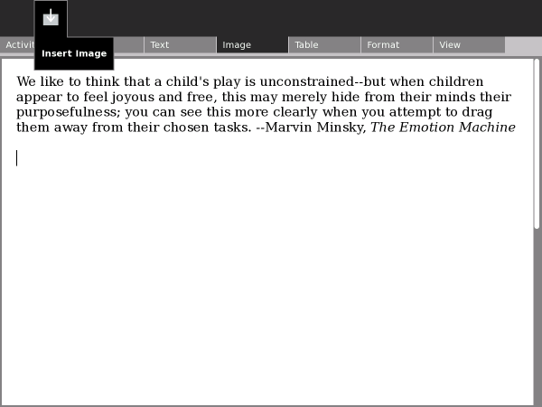
Searching the Journal for images
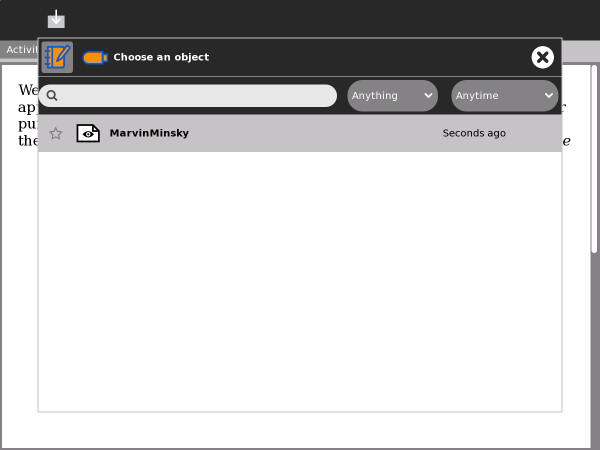
Here is a picture of the author for this quote, Marvin Minsky.
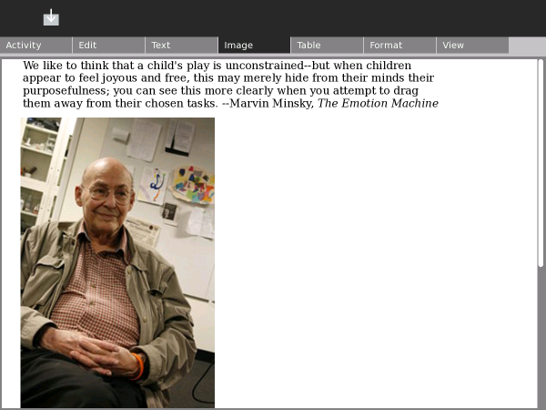
You can reposition the image by clicking on it, then dragging it. Gray boxes in each corner work like "handles" you can drag to resize (rescale) the image.
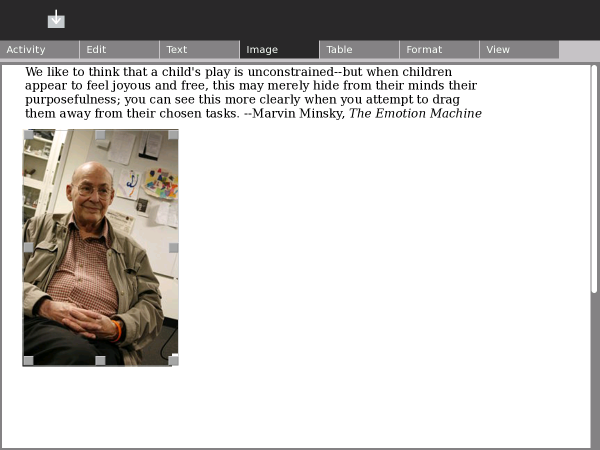
Tip: You can include an image of a web page in a Write document. Type alt + 1 while in the Browse Activity to save an image of a web page in the Journal. (It will be named "Screenshot"). Insert the screenshot into your Write document using the Insert Image dialog.
Editing
Just like other word processors on computers, Write supports copy, paste, cut, undo and redo. Buttons are on the Edit tab. Also, you can use keyboard shortcuts: ctrl + c (copy); ctrl + v (paste); ctrl + x (cut); ctrl + z (undo); and ctrl + y (redo).
Highlight the text you would like to copy by dragging the cursor across it with the left mouse-button depressed. This example shows the words "Marvin Minsky" highlighted.
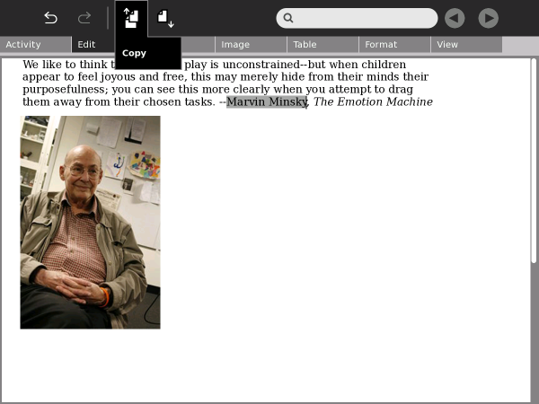
Click the Copy button or press ctrl + c. Sugar copies the text to the clipboard.
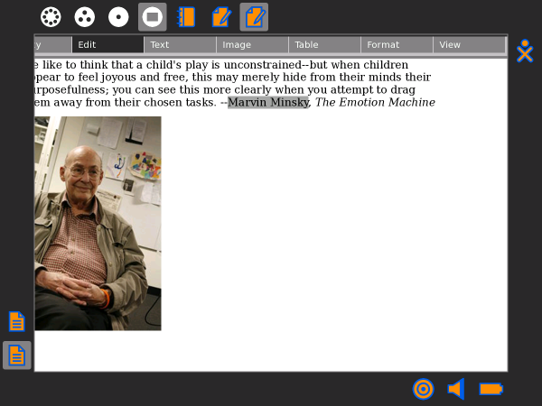
Press ctrl + v or click the Paste button to insert text. Sugar pastes the text where the cursor is blinking.
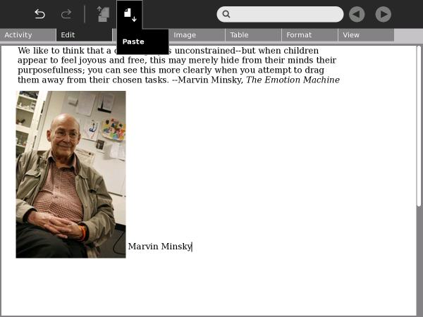
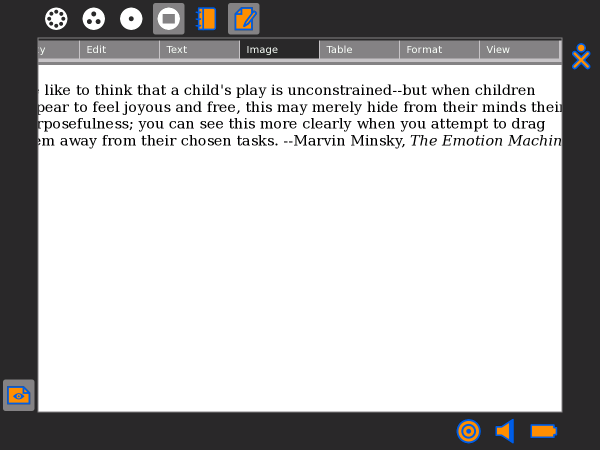
Formatting characters
Write supports a number of character formats: bold, italic, underline, color, point size (small and large), and font family (e.g., serif and sans-serif).
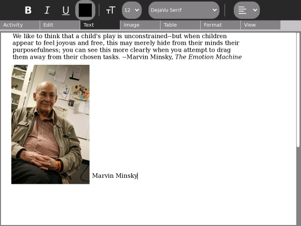
Change the selected text using the pull-down menu on the Text tab.
Bold text by clicking the Bold button or pressing ctrl + b.
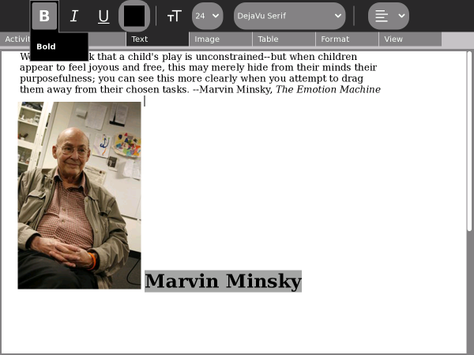
Italicize text by clicking the Italics button or pressing ctrl + i.
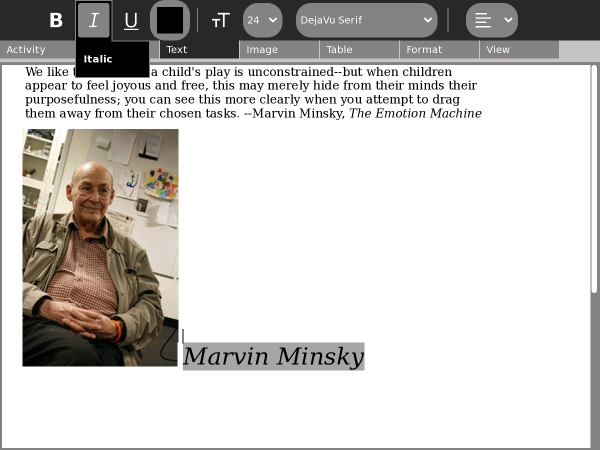
Underline text by clicking the Underline button or pressing ctrl + u.
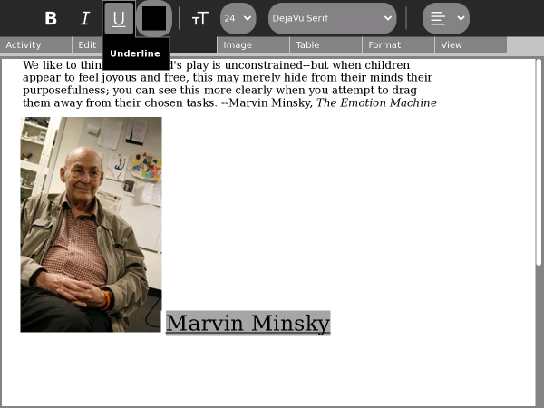
Change color by opening the color palette (click the square on the Text tab).
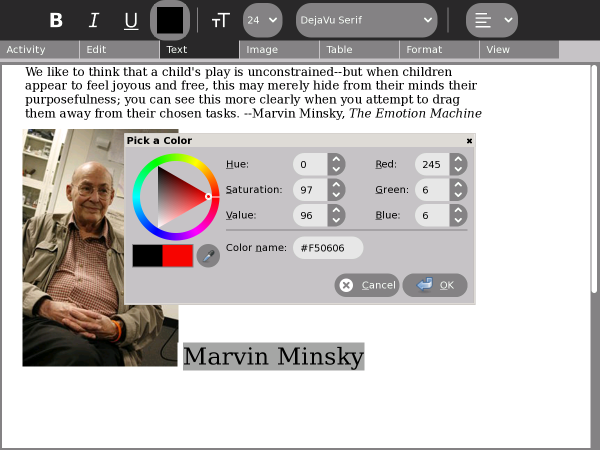
Click on the multicolored circle or triangle to select a color. Click the OK button when you have made your choice.

Use the pull-down menu to select the font family.
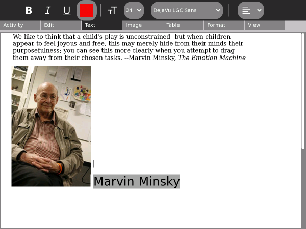
Formatting paragraphs
Paragraph alignment is set with the pull-down menu on the Edit tab.
The example below is left justified.
The example below is right justified.

The example below is centered.
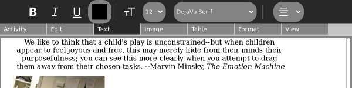
The example below is justified (it looks like a newspaper column).
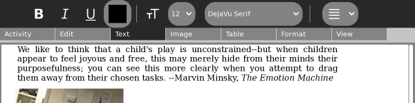
Formatting with styles
The drop-down menu on the Format tab has additional paragraph styles, such as bulleted list, dashed list, numbered list, and others. You can try them all by clicking the drop-down list.
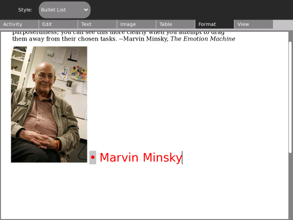
Inserting tables
Use the Table tab to insert tables into your document. By dragging the mouse across the left-hand icon (the grid), you can select the size and dimensions of the table. Other buttons let you add or remove rows and columns.
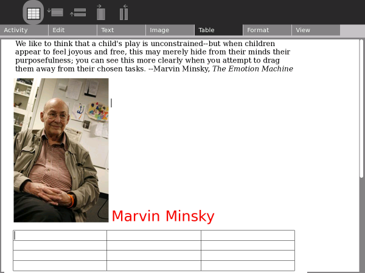
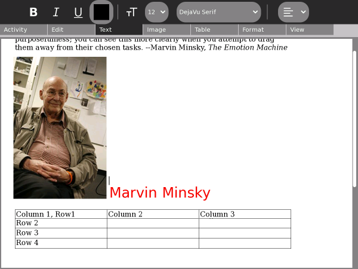
Note: Tables are a bit finicky, meaning they may not behave exactly as you expect. Take care when you use them and don't rely on a table for meaning.
Saving your work
Write automatically saves your work to the Journal. You can resume editing a document clicking its icon in the Journal.
By default, Write stores documents in the ODT file format. ODT is the OpenDocument format for text documents and this format can be opened with OpenOffice.
However, there are times when you may prefer to output your document in another format. The Keep button lets you save a copy of your document in rich text (RTF), hypertext (HTML), or plain text (TXT) formats in the Journal.
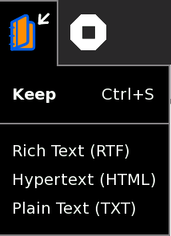
Importing documents
Write can import a variety of file formats, including Microsoft Word® DOC files. If you have a DOC file in your Journal (or on removable media), you can open it in Write using the Resume button.
In the example below, a Word document is opened in Write from a USB storage device.
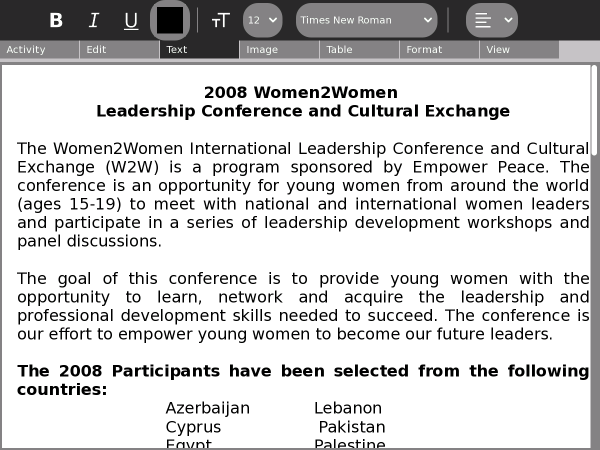
View
Write lets you zoom into and out of the page.
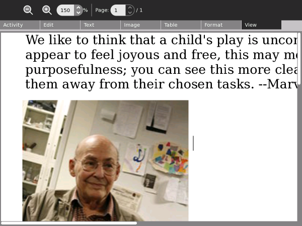
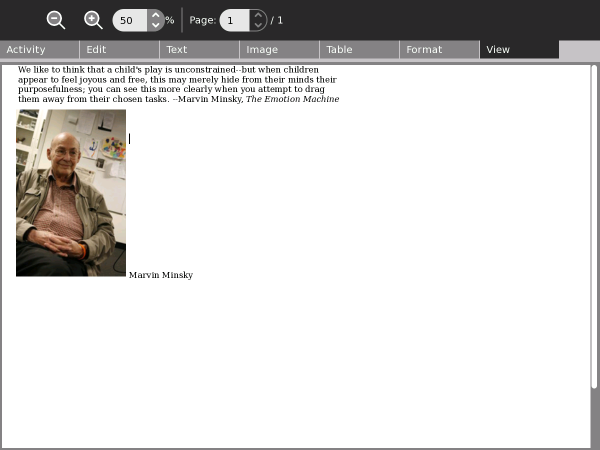
Author : Basics
© Walter Bender 2008
Modifications:
adam hyde 2008
Tom Boyle 2008
License : General Public License
Produced in FLOSS Manuals (http://www.flossmanuals.net)